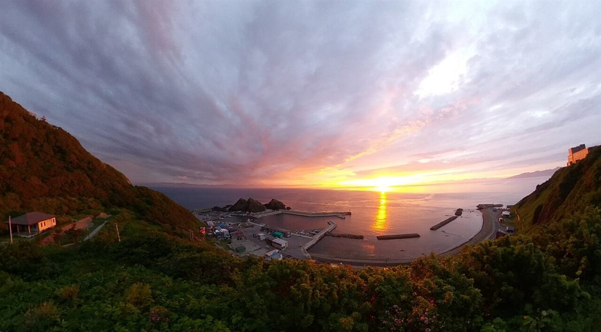
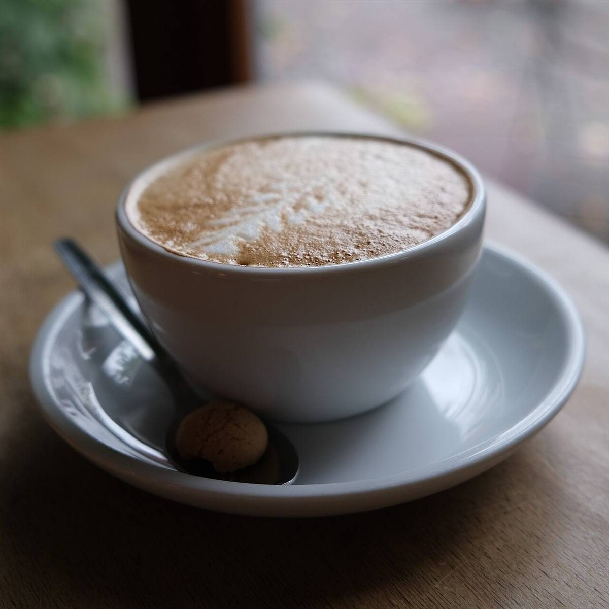

Coffee stand in Mutsu, Shimokita
No.52下北半島の、
コーヒースタンド。
青森県むつ市中央のコーヒースタンド「COFFEE STAND No.52」のご案内ページです。営業時間やメニューなど、詳しいことは準備中。まずはInstagramをのぞいてみてください。

Association / 制作側の連想
一年は、52週。
店名の「52」の由来は分かりません。このページを作った側が思いついたのは、一年の週の数でした。週に一度、ふらりと寄る一杯が積み重なって、一年。そんな連想から、52のマスを並べています。お店の考えとは関係のない、制作側の連想です。
Shimokita
本州のいちばん北の、半島で。

むつ市は下北半島にあります。写真は店の近くではなく、同じ青森県内の海岸のイメージです。

寒い土地で、手のひらをあたためる一杯。そんな場面を想像して選んだ、国外で撮影された写真です。
Information
ご案内
| 所在地 | 〒035-0073 青森県むつ市中央2丁目9-65 |
|---|---|
| 電話 | なし |
| 営業時間 | 準備中 |
| 定休日 | 準備中 |
| ご予約 | 準備中 |
| 駐車場 | 準備中 |
| SNS | Instagram @coffeestand_no.52 |